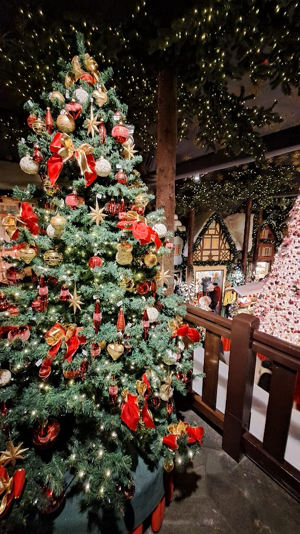
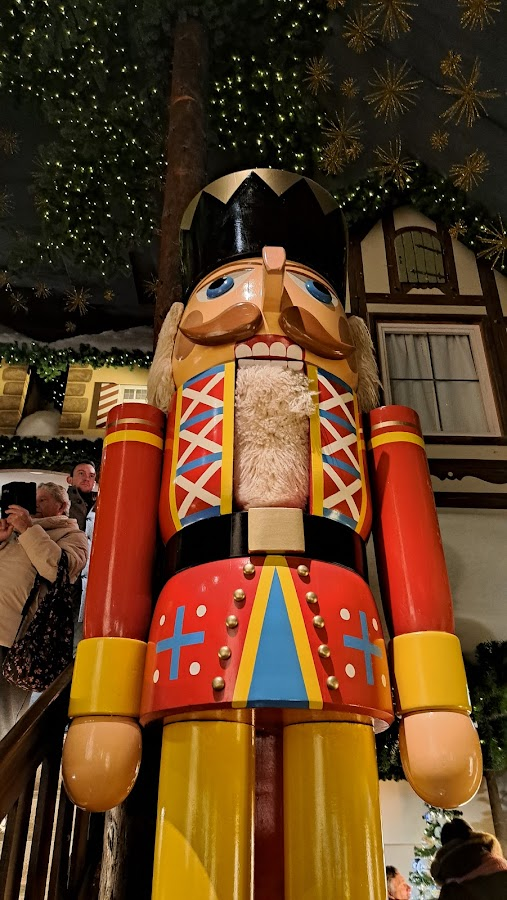
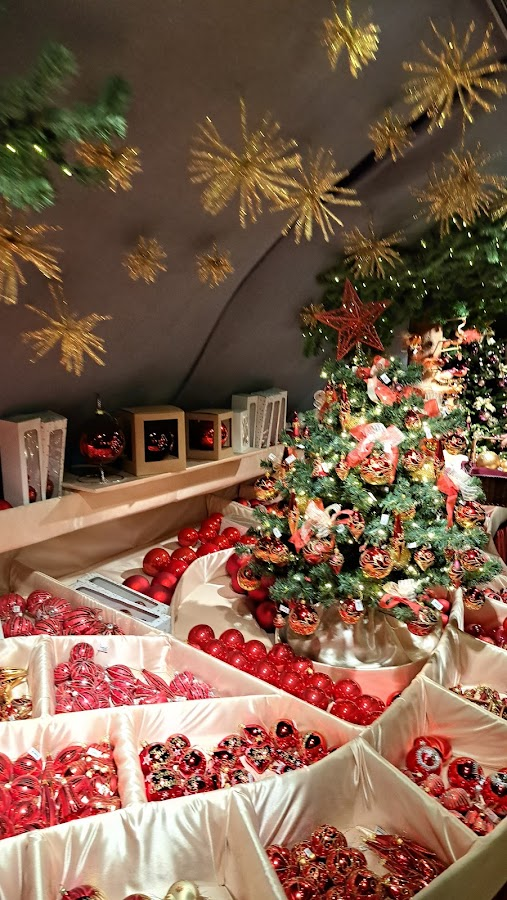
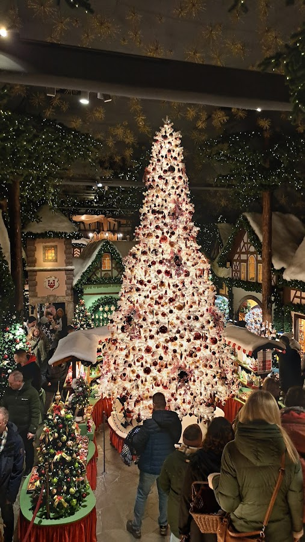
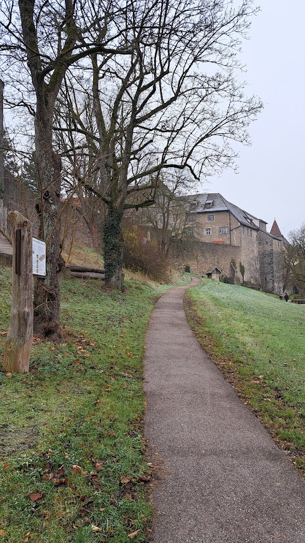

This little town in Bavaria, not far from the bigger and more famous Nurenberg is a real dream for lovers of medieval history and during Christmas time it turns into paradise for kids -- and christmas lovers of all ages.
Although a visit is worth all year long just to admire the beauty of this small and well preserved city, we came here in december specially for the Christmas Market, so I will describe our two-day trip, things to do and the highlights this time of the year
 Chirstmas Spirit EverywhereWe came by car since our home is a 3 hour-drive away but there are also regional trains from Munich that you can book online on the website of the Deutsche Bahn. The town is very small and you can walk everywhere, if you come by train I recommend to book a hotel close to the centre. The more affordable option is probably the Youth Hostel.
But being with a car we opted to rent a room in a Bed & Breakfast at a nearby town for a great price and with all the comfort. We easily found a parking space close to the centre at P3, there a few other parking lots that you can find on Google Maps. It is also easy to find the Reiterlesmarkt (how their Christmas market is named) - just follow the crowds. It traditionally takes place between the market square, green market and church square as well as in the atrium at the town hall. But the entire old town is decorated with bright lights during Advent, which goes from the middle of November until around Christmas. In whole Germany, in general, on 24.12, 25.12 and afterwards the christmas markets are closed but the illuminations in most German towns continue until the end of January or even further. Since dates of markets change every year it is recommended to check before on the official tourism website of the town.
 Kid's eyes shine with all the beautiful dekoSchneebälle -(snow balls), a traditional sweet delight On the streets of the old town you will see besides decorations, many shops, restaurants and bakeries. The most famous treat is the Snow Ball or in German, Schneebälle. They are sweet balls of dough with all types of flavours, from chocolate to pistachio, strawberry, blueberry and many, many more. They are crunchy like a cookie and melt in your mouth. They supposedly were invented here in Rothenburg more than 3 thousand years ago and are still today the most loved pastry of tourists who visit the region.
Anyone who has a sweet tooth will have fun here since the snow balls are not the only delicious pastries you will find in the many bakeries and pastry shops spread all over the old town. In addition, during Christmas Marketes you will find all the typical stand selling sausages, Glühwein (mulled wine), Raclette, Crepes, Waffles, fruits with chocolate on a stick, gingerbread and much much more.
The other half of stands sell all types of handcrafts: Christmas decorations, snowballs (the ones made of glass), handmade jewellery, cookie cutters in all shapes, socks, wool winter clothes and blankets, art crafts, paintings, and even some very exotic things: we saw a stand that sold semi-precious stones and shark teeth.
 There are christmas decorations to sell in all shapes and sizesThe atmosphere is very festive with Christmas music playing, you won’t find places to seat but some high tables where you can just eat standing, as in every Christmas Market in Germany. During the night it gets very romantic and all the Christmas lights make you feel like in a real Christmas movie.
For those who can’t get enough of the Christmas vibe there is also a Christmas Museum inside the Käthe Wohlfart store (a German store famous for specialising in Christmas articles), located right in the middle of the old town. You can also buy some items there - just be prepared for a very long line on the corner if you come in December.
 One of the many huge Christmas Tree inside the Christmas Store and MuseumIf you are more interest in medieval history you will enjoy knowing more about the past of the Rothenburg which dates back to the 10th century. Although it was heavily bombed during the World War, it has been rebuilt and today you can walk on top of its medieval towers through stairways that offer not only a dive into the past but also beautiful views of the town.
 The city is surrounded not only by fortified walls but also beautiful forestsThe city is so popular also because of its skyline and for being surrounded by fortified walls and more than 42 towers. On our second day we left the car in one of the parking lots next to the old town - inside it is car-free which makes it even more charming - and it was right next to one of the stairways that give access to this elevated path that surrounds the old town - there are many points of entrance all around the old town and access is free, you just go up the stairs and follow the path, letting yourself be surprised by the views. There are also many points of exit if you decide to “go down” and walk rather in the city centre. We made a stop close to a playground where we also could observe how green the surroundings of the city are, whit forests and paths right in the middle of nature. Although it was a foggy-cold December morning locals were running and walking their dogs while our son played.
Walking on the tower path